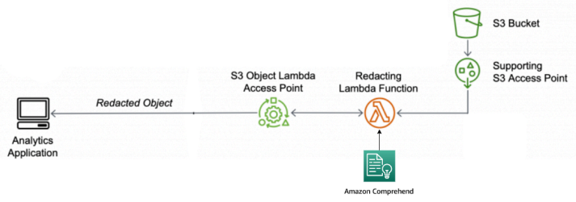

Services
Amazon Simple Storage Service (S3)
Amazon Simple Storage Service (S3) is a cloud-native object storage service engineered for virtually infinite scalability, high data availability, and industry-leading durability. Unlike traditional block or file storage systems, S3 utilizes a flat hierarchy where data is stored as objects—comprising a file, its unique identifier (key), and comprehensive metadata—within logical containers called buckets. This architecture allows S3 to store and retrieve any amount of data from anywhere on the web via a RESTful API, making it the foundational storage layer for modern data lakes, cloud-native applications, and high-performance analytical workloads.
Technically, S3 is built on a distributed system that offers 99.999999999% (11 nines) of durability by automatically replicating objects across a minimum of three physically separated Availability Zones within an AWS Region. It employs an eventual consistency model for overwrite PUTs and DELETEs, while providing strong read-after-write consistency for new object creations. Developers can optimize for both performance and cost by leveraging various storage classes—such as S3 Standard for frequent access, S3 Intelligent-Tiering for unknown patterns, and S3 Glacier for long-term archiving—each with specific retrieval and cost profiles.

Figure 1: S3 Object Lambda Access Point.
S3 offers a robust suite of management and security features, including IAM policies, Bucket Policies, and Access Control Lists (ACLs) for granular permissioning. Advanced capabilities like S3 Object Lock for WORM (Write Once, Read Many) compliance, S3 Versioning to protect against accidental deletions, and S3 Lifecycle policies for automated data tiering further enhance its utility for enterprise-grade data management. Whether used for static website hosting, backup and disaster recovery, or as a high-throughput backend for big data analytics, S3 remains the primary, secure repository for unstructured data in the AWS ecosystem.